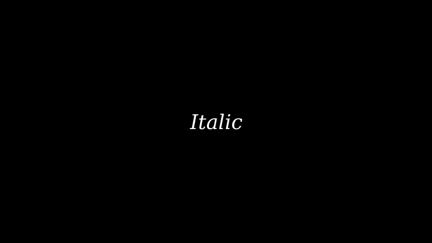
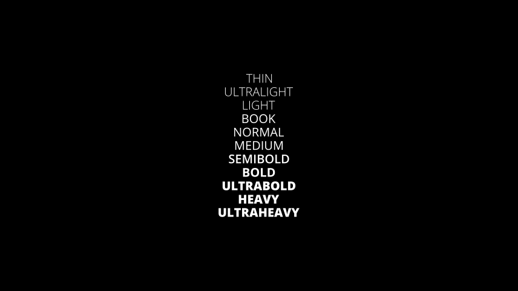
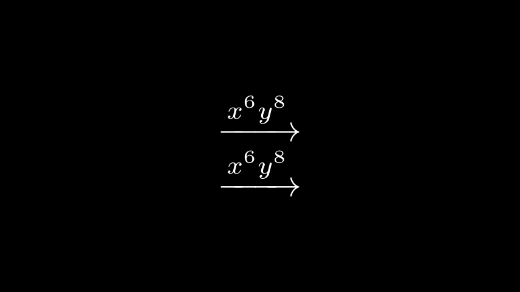
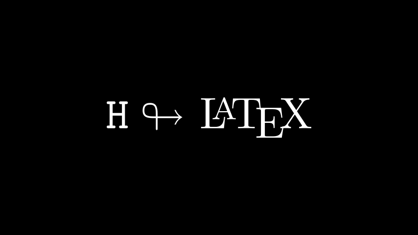
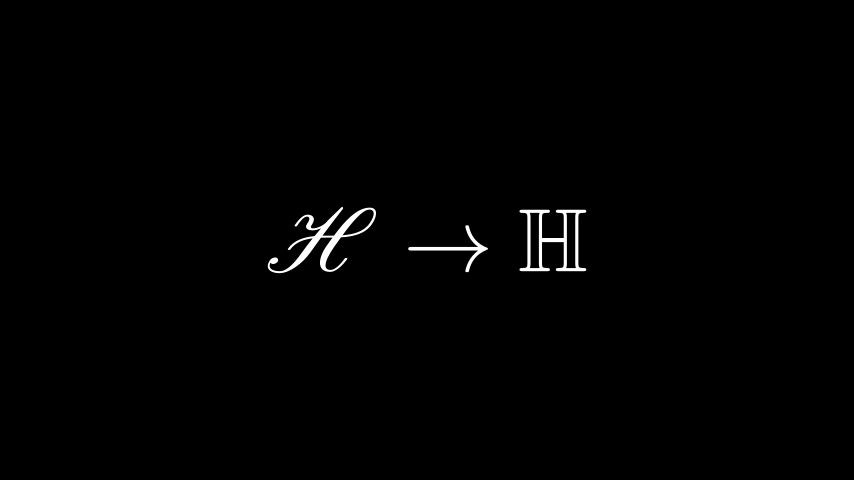

渲染文本和公式
您可以通过两种不同的方式在视频中渲染 文本：
- 使用 Pango (
text_mobject)
- 使用 LaTeX (
tex_mobject)
如果您想渲染简单的文本，您应该使用Textor MarkupText，或其派生之一，例如Paragraph。有关详细信息，请参阅没有 LaTeX 的文本。
当你需要数学排版时应该使用 LaTeX。有关详细信息，请参阅 使用 LaTeX 编写文本。
没有 LaTeX 的文本
向动画添加文本的最简单方法是使用该类Text 。它使用Pango 库来渲染文本。使用 Pango，您还可以渲染非英语字母，例如 hi 或 こんにちは 或 안녕하세요 或 Мрубя babæה。
这是一个简单的Hello World动画。
示例：HelloWorld
| Python |
|---|
| from manim import *
class HelloWorld(Scene):
def construct(self):
text = Text("Hello world", font_size=144)
self.add(text)
|
参考：Text
您还可以使用MarkupText它允许使用 PangoMarkup（有关MarkupText详细信息，请参阅 的文档）来渲染文本。例如：
示例：单线颜色

| Python |
|---|
| from manim import *
class SingleLineColor(Scene):
def construct(self):
text = MarkupText(
f'all in red <span fgcolor="{YELLOW}">except this</span>', color=RED
)
self.add(text)
|
参考：MarkupText
与Text一起工作
本节介绍 的属性Text以及如何在动画中使用它。
使用字体
您可以使用 设置不同的字体font。
笔记
使用的字体必须安装在您的系统中，Pango 应该知道它。您可以使用 获取字体列表manimpango.list_fonts()。
| Bash |
|---|
| >>> import manimpango
>>> manimpango.list_fonts()
[...]
|
示例：字体示例
| Python |
|---|
| from manim import *
class FontsExample(Scene):
def construct(self):
ft = Text("Noto Sans", font="Noto Sans")
self.add(ft)
|
设置倾斜度和重量
Slant 是文本的样式，可以是NORMAL（默认）， ITALIC或OBLIQUE。通常，对于许多字体来说，ITALIC和 OBLIQUE看起来很相似，但ITALIC使用Roman Style，而 OBLIQUE使用Italic Style。
粗细指定字体的粗细。您可以在 中看到权重列表 manimpango.Weight。
示例：Slants 示例

| Python |
|---|
| from manim import *
class SlantsExample(Scene):
def construct(self):
a = Text("Italic", slant=ITALIC)
self.add(a)
|
示例：不同的权重

| Python |
|---|
| from manim import *
class DifferentWeight(Scene):
def construct(self):
import manimpango
g = VGroup()
weight_list = dict(
sorted(
{
weight: manimpango.Weight(weight).value
for weight in manimpango.Weight
}.items(),
key=lambda x: x[1],
)
)
for weight in weight_list:
g += Text(weight.name, weight=weight.name, font="Open Sans")
self.add(g.arrange(DOWN).scale(0.5))
|
使用颜色
您可以使用以下命令设置文本的颜色color：
示例：简单颜色

| Python |
|---|
| from manim import *
class SimpleColor(Scene):
def construct(self):
col = Text("RED COLOR", color=RED)
self.add(col)
|
您可以使用诸如t2c为特定字符着色之类的实用程序。如果您的文本包含连字（如迭代文本中所述），这可能会出现问题。
t2c接受两种类型的词典，
- 键可以包含类似
[2:-1]或 的索引，这与 Python 中的切片[4:8]工作方式类似 。这些值应该是来自 的文本的颜色。Color
- 键包含应单独着色的单词或字符，值应为以下颜色
Color：
示例：Textt2c 示例

| Python |
|---|
| from manim import *
class Textt2cExample(Scene):
def construct(self):
t2cindices = Text('Hello', t2c={'[1:-1]': BLUE}).move_to(LEFT)
t2cwords = Text('World',t2c={'rl':RED}).next_to(t2cindices, RIGHT)
self.add(t2cindices, t2cwords)
|
MarkupText.
使用渐变
您可以使用 添加渐变gradient。该值必须是任意长度的可迭代：
示例：渐变示例
| Python |
|---|
| from manim import *
class GradientExample(Scene):
def construct(self):
t = Text("Hello", gradient=(RED, BLUE, GREEN), font_size=96)
self.add(t)
|
t2g具有文本特定字符的渐变。它与颜色接口具有类似的语法：
示例：t2g 示例

| Python |
|---|
| from manim import *
class t2gExample(Scene):
def construct(self):
t2gindices = Text(
'Hello',
t2g={
'[1:-1]': (RED,GREEN),
},
).move_to(LEFT)
t2gwords = Text(
'World',
t2g={
'World':(RED,BLUE),
},
).next_to(t2gindices, RIGHT)
self.add(t2gindices, t2gwords)
|
设置行距
您可以使用以下命令设置行间距line_spacing：
示例：行间距

| Python |
|---|
| from manim import *
class LineSpacing(Scene):
def construct(self):
a = Text("Hello\nWorld", line_spacing=1)
b = Text("Hello\nWorld", line_spacing=4)
self.add(Group(a,b).arrange(LEFT, buff=5))
|
禁用连字
通过禁用连字，您将获得字符和子对象之间的一对一映射。这解决了文本着色的问题。
警告
请注意，将此方法用于严重依赖连字（阿拉伯文本）的文本可能会产生意外结果。
您可以通过传递disable_ligatures到 来 禁用连字Text。例如：
示例：禁用连字

| Python |
|---|
| from manim import *
class DisableLigature(Scene):
def construct(self):
li = Text("fl ligature",font_size=96)
nli = Text("fl ligature", disable_ligatures=True, font_size=96)
self.add(Group(li, nli).arrange(DOWN, buff=.8))
|
文本对象的行为类似于VGroups. 因此，您可以对文本进行切片和索引。
例如，您可以通过迭代将每个字母设置为不同的颜色。
示例：迭代颜色

| Python |
|---|
| from manim import *
class IterateColor(Scene):
def construct(self):
text = Text("Colors", font_size=96)
for letter in text:
letter.set_color(random_bright_color())
self.add(text)
|
警告
请注意，连字可能会在此处引起问题。如果您需要字符到子对象的一对一映射，您应该将参数传递disable_ligatures给Text. 请参阅禁用连字。
与MarkupText一起工作
MarkupText 与 类似Text，它们之间唯一的区别是它接受并处理 PangoMarkup （类似于 html），而不是仅仅渲染纯文本。
MarkupText有关 PangoMarkup 的更多详细信息和进一步参考，请参阅 的文档。
示例：标记测试

| Python |
|---|
| from manim import *
class MarkupTest(Scene):
def construct(self):
text = MarkupText(
f'<span underline="double" underline_color="green">double green underline</span> in red text<span fgcolor="{YELLOW}"> except this</span>',
color=RED,
font_size=34
)
self.add(text)
|
使用 LaTeX 编写文本
正如您可以用来Text向视频添加文本一样，您也可以用来Tex插入 LaTeX。
例如，
示例：HelloLaTeX

| Python |
|---|
| from manim import *
class HelloLaTeX(Scene):
def construct(self):
tex = Tex(r"\LaTeX", font_size=144)
self.add(tex)
|
笔记
请注意，我们使用原始字符串 ( r'...') 而不是常规字符串 ( '...')。这是因为 TeX 代码使用了很多特殊字符（例如\），这些字符在常规 Python 字符串中具有特殊含义。另一种方法是编写\\以避免反斜杠：Tex('\\LaTeX')。
与MathTex一起工作
默认情况下，传递到的所有内容都MathTex处于数学模式。更准确地说， MathTex是在align*环境中进行处理。Tex您可以通过用$符号 将公式括起来来实现类似的效果$\xrightarrow{x^6y^8}$：：
示例：MathTeXDemo

| Python |
|---|
| from manim import *
class MathTeXDemo(Scene):
def construct(self):
rtarrow0 = MathTex(r"\xrightarrow{x^6y^8}", font_size=96)
rtarrow1 = Tex(r"$\xrightarrow{x^6y^8}$", font_size=96)
self.add(VGroup(rtarrow0, rtarrow1).arrange(DOWN))
|
LaTeX 命令和关键字参数
我们可以使用 AMS 数学包中的任何标准 LaTeX 命令。例如mathtt数学文本类型或looparrowright箭头。
示例：AMSLaTeX

| Python |
|---|
| from manim import *
class AMSLaTeX(Scene):
def construct(self):
tex = Tex(r'$\mathtt{H} \looparrowright$ \LaTeX', font_size=144)
self.add(tex)
|
在 Manim 方面，该类Tex还接受属性来更改输出的外观。这与 Text类非常相似。例如，color关键字更改 TeX mobject 的颜色。
示例：LaTeXAttributes
| Python |
|---|
| from manim import *
class LaTeXAttributes(Scene):
def construct(self):
tex = Tex(r'Hello \LaTeX', color=BLUE, font_size=144)
self.add(tex)
|
额外的 LaTeX 包
某些命令需要将特殊包加载到 TeX 模板中。例如，要使用mathscr脚本，我们需要添加mathrsfs 包。由于这个包默认没有加载到 Manim 的 tex 模板中，所以我们必须手动添加它。
示例：AddPackageLatex

| Python |
|---|
| from manim import *
class AddPackageLatex(Scene):
def construct(self):
myTemplate = TexTemplate()
myTemplate.add_to_preamble(r"\usepackage{mathrsfs}")
tex = Tex(
r"$\mathscr{H} \rightarrow \mathbb{H}$}",
tex_template=myTemplate,
font_size=144,
)
self.add(tex)
|
子串和部分
TeX mobject 可以接受多个字符串作为参数。tex[1]之后，您可以通过索引（如）或选择部分 tex 代码来引用各个部分。\bigstar在此示例中，我们设置使用的颜色set_color_by_tex()：
示例：LaTeXSubstrings
| Python |
|---|
| from manim import *
class LaTeXSubstrings(Scene):
def construct(self):
tex = Tex('Hello', r'$\bigstar$', r'\LaTeX', font_size=144)
tex.set_color_by_tex('igsta', RED)
self.add(tex)
|
请注意，set_color_by_tex()为包含 Tex 的整个子字符串着色，而不仅仅是特定符号或 Tex 表达式。考虑以下示例：
示例：不正确的 LaTeXSubstringColoring

| Python |
|---|
| from manim import *
class IncorrectLaTeXSubstringColoring(Scene):
def construct(self):
equation = MathTex(
r"e^x = x^0 + x^1 + \frac{1}{2} x^2 + \frac{1}{6} x^3 + \cdots + \frac{1}{n!} x^n + \cdots"
)
equation.set_color_by_tex("x", YELLOW)
self.add(equation)
|
正如您所看到的，这将整个方程染成黄色，这与预期相反。要仅着色为x黄色，我们必须执行以下操作：
示例：正确的 LaTeXSubstringColoring

| Python |
|---|
| from manim import *
class CorrectLaTeXSubstringColoring(Scene):
def construct(self):
equation = MathTex(
r"e^x = x^0 + x^1 + \frac{1}{2} x^2 + \frac{1}{6} x^3 + \cdots + \frac{1}{n!} x^n + \cdots",
substrings_to_isolate="x"
)
equation.set_color_by_tex("x", YELLOW)
self.add(equation)
|
通过设置substrings_to_isolate，x我们会自动将 拆分 MathTex为子字符串，并将各个x组件隔离为单独的子字符串。只有这样才能set_color_by_tex()达到预期的效果。
请注意，Manim 还支持自定义语法，可以轻松地将 TeX 字符串拆分为子字符串：只需用双括号将要隔离的公式部分括起来即可。在 string 中 ，渲染的 mobject 将由子字符串, , , , 和组成。这使得使用 可以轻松编写相似文本片段之间的转换。MathTex(r"{{ a^2 }} + {{ b^2 }} = {{ c^2 }}")``a^2``+``b^2``=``c^2TransformMatchingTex
用于index_labels处理复杂的字符串
有时您可能会使用非常复杂的MathTex对象，这使得使用其各个组件变得困难。这就是调试功能index_labels()非常有用的地方。
该方法显示 mobject 的子 mobject 的索引，使您可以轻松找到要更改的 mobject 的组件。
示例：IndexLabelsMathTex

| Python |
|---|
| from manim import *
class IndexLabelsMathTex(Scene):
def construct(self):
text = MathTex(r"\binom{2n}{n+2}", font_size=96)
# index the first (and only) term of the MathTex mob
self.add(index_labels(text[0]))
text[0][1:3].set_color(YELLOW)
text[0][3:6].set_color(RED)
self.add(text)
|
LaTeX 数学字体 - 模板库
在排版数学公式时更改 LaTeX 中的字体比常规文本更棘手。它需要更改用于编译 TeX 的模板。Manim 附带了一系列TexFontTemplates 可供您使用的工具。这些模板都将在数学模式下工作：
示例：LaTeXMathFonts

| Python |
|---|
| from manim import *
class LaTeXMathFonts(Scene):
def construct(self):
tex = Tex(
r"$x^2 + y^2 = z^2$",
tex_template=TexFontTemplates.french_cursive,
font_size=144,
)
self.add(tex)
|
Manim 还包含TexTemplateLibrary3Blue1Brown 使用的 TeX 模板。一个例子是 ctex 模板，用于排版中文脚本。为此，您的系统上必须安装 ctex LaTeX 软件包。Tex此外，如果您只是排版文本，您可能根本不需要，而应该使用Text。
示例：LaTeXTemplateLibrary
| Python |
|---|
| from manim import *
class LaTeXTemplateLibrary(Scene):
def construct(self):
tex = Tex('Hello 你好 \\LaTeX', tex_template=TexTemplateLibrary.ctex, font_size=144)
self.add(tex)
|
对齐公式
MathTexmobject 在 LaTeX 环境中排版 align* 。这意味着您可以在排版多行公式时使用&对齐字符：
示例：LaTeXAlignEnvironment

| Python |
|---|
| from manim import *
class LaTeXAlignEnvironment(Scene):
def construct(self):
tex = MathTex(r'f(x) &= 3 + 2 + 1\\ &= 5 + 1 \\ &= 6', font_size=96)
self.add(tex)
|